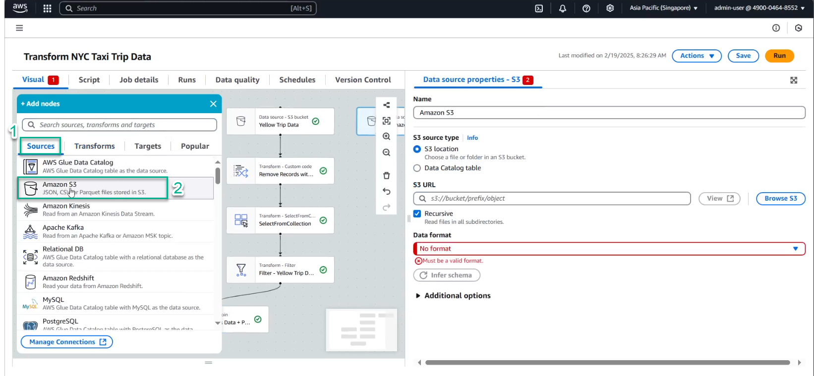
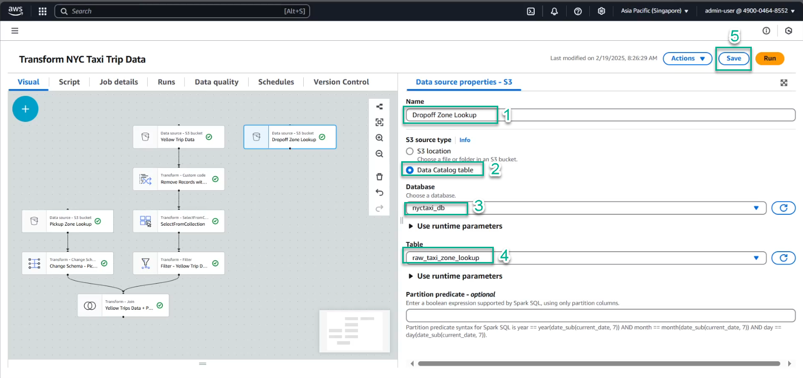
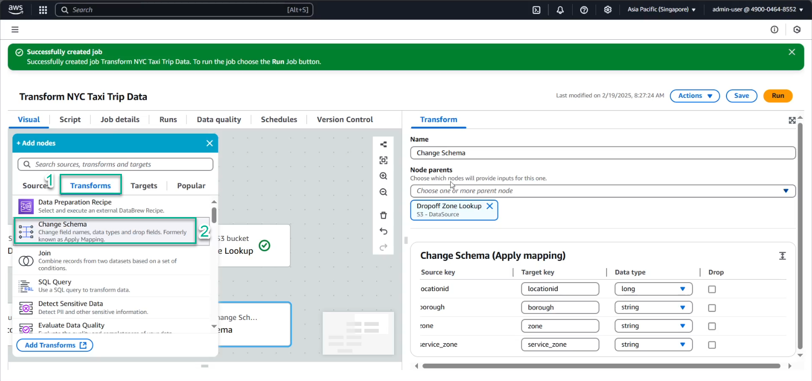
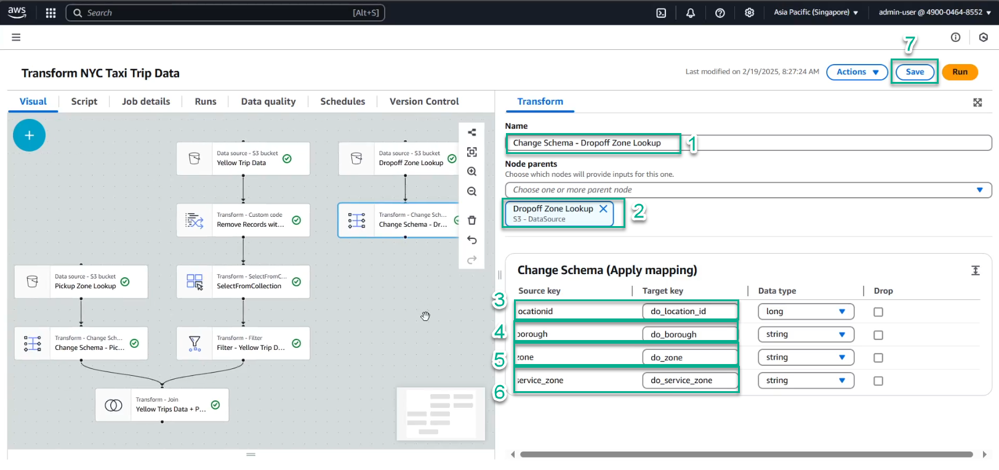
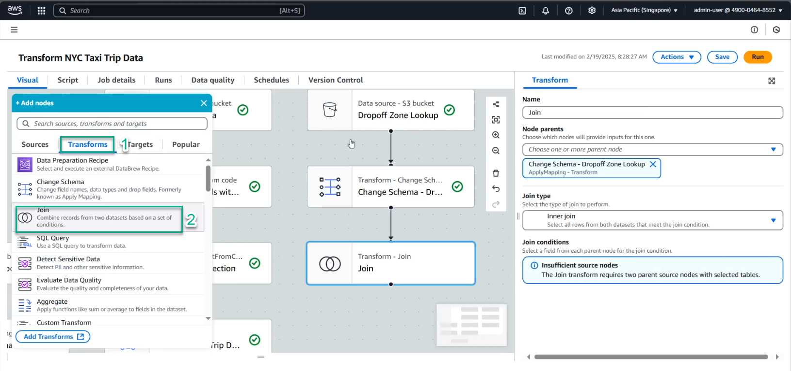
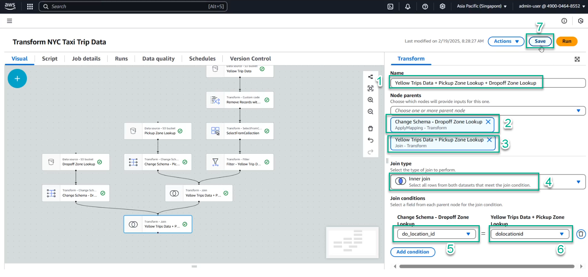

Nhấp vào biểu tượng Source, chọn S3. 
Trong nút Data source – S3 bucket, cung cấp thông tin sau:
Dropoff Zone Lookupnyctaxi_dbraw_taxi_zone_lookup
Nhớ lưu công việc của bạn.
Đảm bảo rằng nút Amazon S3 - Dropoff Zone Lookup đã được chọn.
Nhấp vào biểu tượng Transform, chọn Change Schema. 
Cung cấp thông tin sau:
Change Schema - Dropoff Zone Lookupdo_location_iddo_boroughdo_zonedo_service_zone
Nhớ lưu công việc của bạn.
Nhấp vào biểu tượng Transform, chọn Join. 
Cung cấp thông tin sau:
Yellow Trips Data + Pickup Zone Lookup + Dropoff Zone Lookupdo_location_iddolocationid
Nhớ lưu công việc của bạn.